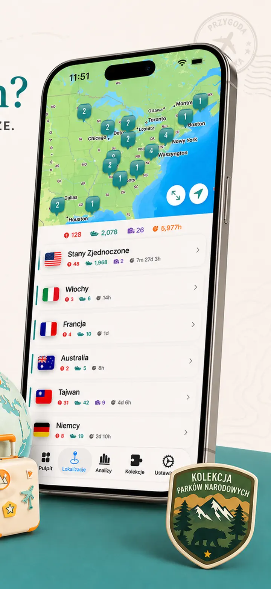
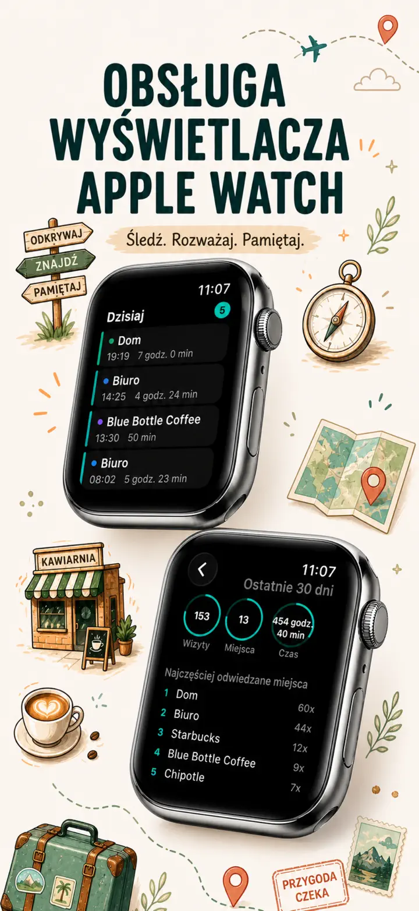
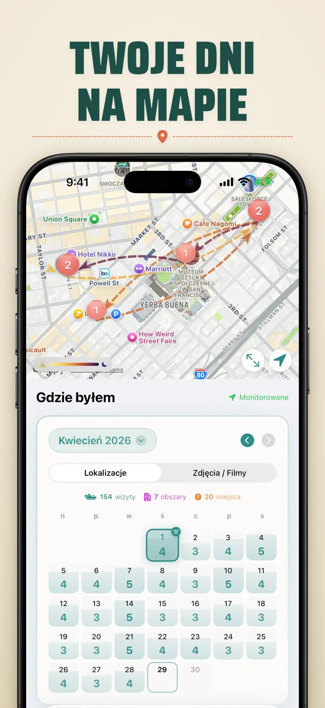
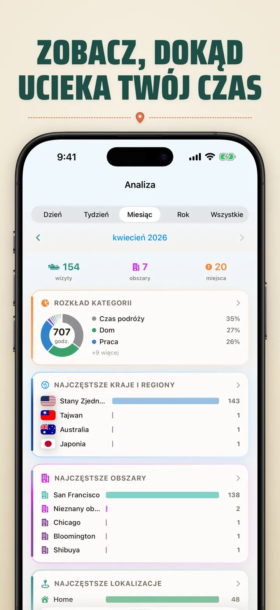
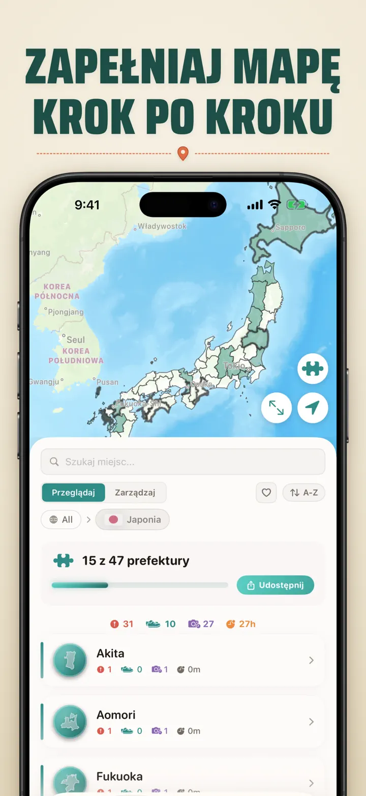
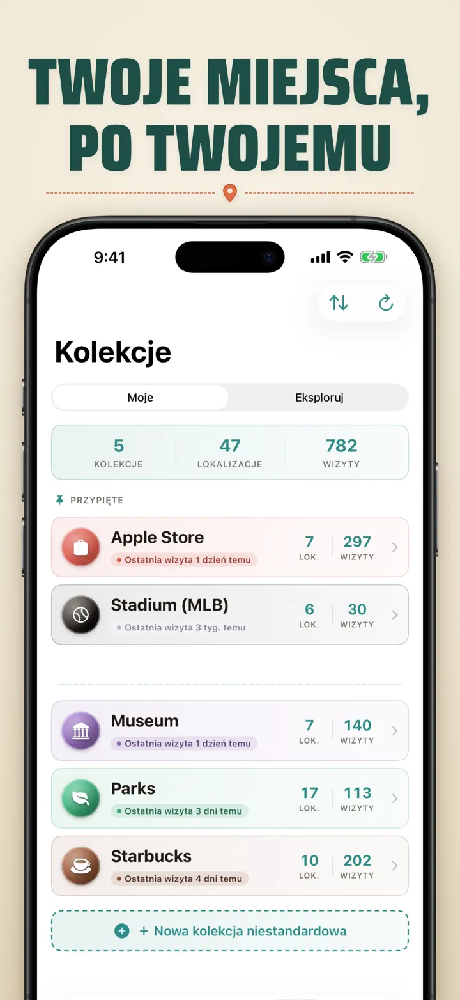
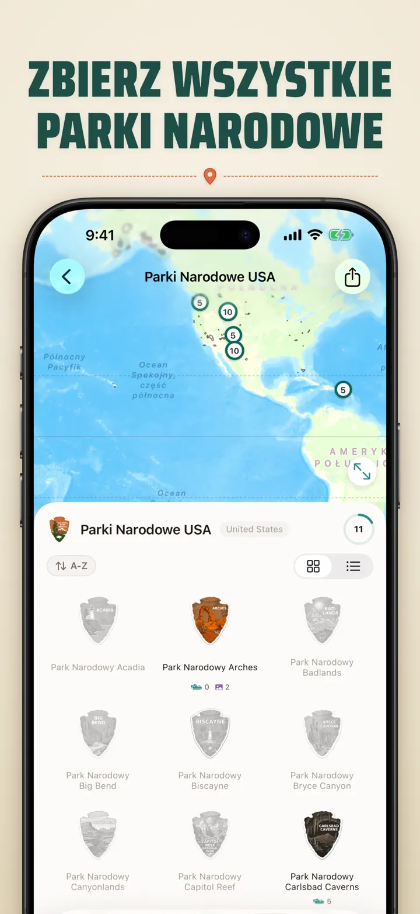
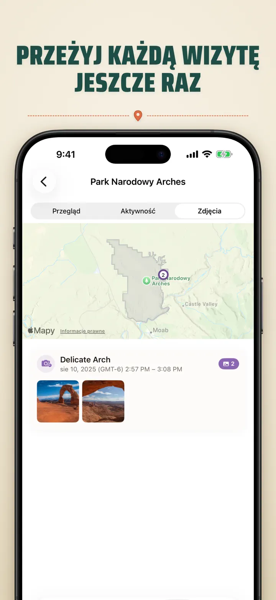

Gdzie byłem
Auto podróże, lokacje zdjęć
Nowość: 103 świątynie Ichinomiya Japonii, każda z własną rzeźbioną odznaką. Automatyczne śledzenie wizyt i prywatna oś czasu, wszystko na Twoim urządzeniu.
Pobierz w App StoreO aplikacji
Where was I ? — Twoja osobista pamięć lokalizacji
Próbowałeś przypomnieć sobie restaurację sprzed miesiąca? Albo ile czasu spędzasz w pracy, a ile w domu? Where was I ? automatycznie śledzi wizyty i tworzy piękną oś czasu Twojej podróży.
AUTOMATYCZNE ŚLEDZENIE
Bez ręcznego wprowadzania. Aplikacja po cichu zapisuje przyjścia i wyjścia, tworząc szczegółową historię wizyt bez żadnego wysiłku.
INTELIGENTNY KALENDARZ
Zobacz wizyty według dnia, tygodnia lub miesiąca. Intuicyjny kalendarz pokazuje liczbę wizyt i miejsc jednym rzutem oka. Stuknij dowolny dzień, aby zobaczyć, gdzie byłeś.
WIDŻETY EKRANU GŁÓWNEGO I BLOKADY
Ostatnie wizyty zobaczysz jednym rzutem oka dzięki średniemu widżetowi ekranu głównego. Widżety ekranu blokady pokazują bieżącą lokalizację, licznik pobytu lub dzisiejszą liczbę wizyt — wszystkie po stuknięciu otwierają aplikację.
UPORZĄDKOWANE LOKALIZACJE
Lokalizacje są automatycznie grupowane według regionu i miasta. Przypisz kategorie, takie jak Dom, Praca, Siłownia czy Kawiarnia. Twórz własne kategorie z ikonami i kolorami.
POTĘŻNA ANALITYKA
Odkryj wzorce w swoim życiu:
- Rozkład czasu między kategoriami
- Najczęściej odwiedzane miejsca
- Analiza tygodniowego rytmu
- Trendy częstotliwości wizyt
- Wykres długości pobytu dla każdej lokalizacji — dzień, tydzień, miesiąc lub rok
KOLEKCJA KRAJÓW I REGIONÓW
Zamień podróże w układankę! Zobacz, ile regionów odwiedziłeś w każdym kraju. Dziel się postępami jako układanką.
POSTĘP W PARKACH NARODOWYCH
Odkrywaj naturę! Automatycznie zapisuj wizyty w parkach i śledź postęp obok codziennych lokalizacji.
100 SŁYNNYCH ZAMKÓW JAPONII
Zwiedzasz Japonię? Nowa wbudowana kolekcja śledzi Twoje wizyty w 100 słynnych zamkach kraju. Otwórz Kolekcje → Odkrywaj → Japonia.
KOLEKCJE NIESTANDARDOWE
Śledź wszystko — Apple Stores, muzea, browary. Stwórz kolekcję, ustaw słowa kluczowe i patrz, jak wypełnia się sama. Dodawaj lub usuwaj lokalizacje ręcznie. Każda pokazuje liczbę, historię i mapę.
ZAIMPORTUJ HISTORIĘ LOKALIZACJI
Przechodzisz z innej aplikacji? Zabierz ze sobą całą historię — format jest wykrywany automatycznie, duże eksporty są obsługiwane, a przed importem zobaczysz podgląd:
- Google Timeline (eksport z Google Maps lub Google Takeout)
- Arc Timeline (miesięczne pliki .json eksportowane z Arc)
- Moves (kopia zapasowa ProtoGeo / Facebook Moves)
ZARZĄDZANIE ZBIORCZE
Zarządzaj lokalizacjami w jednym miejscu. Wyszukuj, sortuj i filtruj. Zaznacz wiele, aby skategoryzować lub usunąć zbiorczo.
PRYWATNOŚĆ NA PIERWSZYM MIEJSCU
Twoje dane lokalizacyjne pozostają na urządzeniu. Bez kont. Bez wysyłania danych na serwery. Twoje ruchy to Twoja sprawa.
IDEALNE DO:
- Śledzenia godzin i miejsc pracy
- Pamiętania restauracji i sklepów
- Analizy codziennej rutyny
- Dziennika podróży i wizyt w parkach narodowych
- Rozliczania kosztów i przebiegu
FUNKCJE:
- Automatyczne wykrywanie przybycia i wyjścia
- Widok kalendarza z dzienną osią czasu wizyt
- Widżety ekranu głównego i blokady z głębokimi linkami
- Grupowanie lokalizacji według regionu i miasta
- Własne kategorie z ikonami i kolorami
- Inteligentne sugestie kategorii z Apple Maps
- Szczegółowa historia wizyt z czasem trwania
- Wykres długości pobytu dla lokalizacji (dzień / tydzień / miesiąc / rok)
- Panel analityczny z wglądami
- Wyszukiwanie i filtrowanie lokalizacji
- Kolekcja krajów i regionów z udostępnianą układanką
- Śledzenie postępu w parkach narodowych
- Wbudowana kolekcja 100 słynnych zamków Japonii
- Kolekcje niestandardowe z dopasowaniem po słowach kluczowych, ręczną edycją i statystykami
- Zbiorcze zarządzanie lokalizacjami
- Import z Google Timeline, Arc Timeline i Moves
- Możliwości eksportu
- Bez konta
- Projekt z myślą o prywatności
Zacznij budować pamięć lokalizacji już dziś. Pobierz Where was I ? i nigdy nie zapomnij, gdzie byłeś.
Privacy Policy: https://masawata.net/privacy-policy.html Terms Of Service: https://www.apple.com/legal/internet-services/itunes/dev/stdeula/
Zrzuty ekranu








Gdzie byłem
Nowość: 103 świątynie Ichinomiya Japonii, każda z własną rzeźbioną odznaką. Automatyczne śledzenie wizyt i prywatna oś czasu, wszystko na Twoim urządzeniu.
Pobierz w App Store